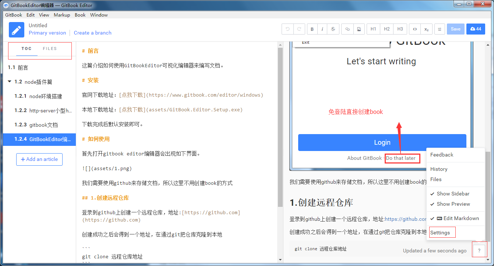

1. 前言
这篇介绍如何使用GitBookEditor可视化编辑器来编写文档。
2. 安装
官网下载地址：点我下载
本地下载地址：点我下载
下载完成后默认安装即可。
3. 如何使用
首先打开gitbook editor编辑器会出现如下界面。
我们需要使用github来存储文档，所以这里不用创建book的方式
3.1. 创建远程仓库
登录到github上创建一个远程仓库，地址:https://github.com
创建成功之后会得到一个地址，在通过git把仓库克隆到本地
git clone 远程仓库地址
3.2. 打开仓库
通过gitbook editor的open打开刚才克隆下来的仓库。
打开之后就可以正常编辑你的文档了。当然，编辑器中还有许多的选项配置，具体需要自行摸索，重点都已经圈起来了

3.3. 如何build
当文档编写完成之后，如何将其导出为html呢？？
需要根据 gitbook篇 中，安装gitbook。
安装：
npm install gitbook-cli -g
npm install gitbook -g
检查版本：
gitbook -V
当环境安装完成之后，只需要在当前根目录执行
gitbook serve -p 4000
根据提示打开 http://localhost:4000 ,文档就呈现出来了。
4. 插件篇
参考文档1：http://gitbook.zhangjikai.com/plugins.html
参考文档2：https://chrisniael.gitbooks.io/gitbook-documentation/content/build/index.html
参考文档3：http://www.chengweiyang.cn/gitbook/gitbook.com/edit.html
首先需要在根目录创建一个book.json的文件，以anchor-navigation-ex插件为例，
插件地址：https://github.com/zq99299/gitbook-plugin-anchor-navigation-ex
book.json
{
"gitbook": "3.2.2",
"language": "zh-hans",
"plugins": [
"anchor-navigation-ex",
"-sharing"
],
"pluginsConfig": {
"anchor-navigation-ex": {
"showLevel": true,
"associatedWithSummary": true,
"mode": "float",
"float": {
"showLevelIcon": false,
"level1Icon": "fa fa-hand-o-right",
"level2Icon": "fa fa-hand-o-right",
"level3Icon": "fa fa-hand-o-right"
},
"pageTop": {
"showLevelIcon": false,
"level1Icon": "fa fa-hand-o-right",
"level2Icon": "fa fa-hand-o-right",
"level3Icon": "fa fa-hand-o-right"
}
}
}
}
-sharing表示不使用分享功能。book.json配置好之后需要在根目录执行
gitbook install
最后启动
gitbook serve
我的book.json
{
"title": "Node环境下的组件使用",
"gitbook": "3.2.2",
"language": "zh-hans",
"plugins": [
"anchor-navigation-ex",
"emphasize",
"splitter",
"expandable-chapters-small",
"multipart",
"prism",
"-highlight",
"-sharing"
],
"pluginsConfig": {
"prism": {
"css": [
"prismjs/themes/prism-okaidia.css"
]
},
"anchor-navigation-ex": {
"showLevel": true,
"associatedWithSummary": true,
"mode": "float",
"float": {
"showLevelIcon": false,
"level1Icon": "fa fa-hand-o-right",
"level2Icon": "fa fa-hand-o-right",
"level3Icon": "fa fa-hand-o-right"
},
"pageTop": {
"showLevelIcon": false,
"level1Icon": "fa fa-hand-o-right",
"level2Icon": "fa fa-hand-o-right",
"level3Icon": "fa fa-hand-o-right"
}
}
}
}